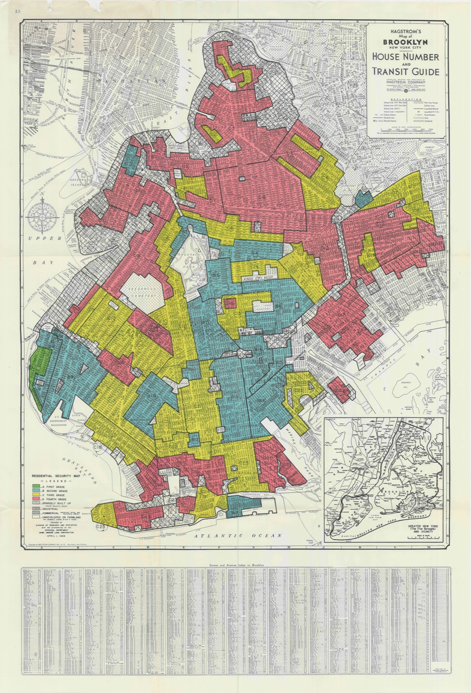

Week 4: GIS Choices for Architects
QGIS, ArcGIS, geopandas, and Spatial Evidence Workflows
Today’s Agenda
Session 1
Lecture / demo
- what counts as a GIS question
- three GIS paradigms for architecture
- the setup ladder:
Jupyter,Anaconda,Miniconda,Colab geopandasas the code-GIS anchor- Hong Kong data sources and pathway choice
Session 2
Round table on YOUR site
- upload one rough spatial material
- name the spatial claim it depends on
- reconstruct your layers in four steps
A tool week is still an evidence week. We choose a GIS path only when the decision needs one — not because the maps look professional.
Course progress
This week produces a spatial evidence artifact
W1 decision
W2 evidence
W3 comparison
W4 GIS route
W5 model route
W6 pathway
Input site boundary + transit/noise/green layers as GeoJSON
Change buffer distance, overlay rules, scoring weights
Output site score table + map export + cleaned GeoJSON
Bridge GeoJSON/CSV can be read by Rhino/GH for site geometry and attributes
The framing
GIS is not just digital mapping
GIS earns a place in your workflow only when your question depends on:
- location
- proximity
- overlap
- boundaries
- access
- context over space and time
If the question is not spatial, a beautiful map is decoration, not evidence.
Read the site first
Worked site question: Kai Tak

If this were your project, what spatial questions would matter first?
Typical GIS questions for architecture
- which site is better connected to transit?
- which parcels fall inside a flood or noise risk zone?
- how much of a site lies within a 5-minute walking catchment?
- where do zoning, topography, and infrastructure collide?
- how can context be exported into a design workflow?
Each one names a spatial claim you would have to defend with evidence.
Three paths, one decision
Three GIS paradigms
| Path | Best for | Strength | Risk |
|---|---|---|---|
QGIS |
visual exploration and map production | free, flexible, fast to start | harder to reproduce step by step |
ArcGIS |
institutional and enterprise workflows | strong ecosystem, client compatibility | licensing, overhead, platform dependence |
geopandas |
notebook-based spatial analysis | reproducible, scriptable, integrates with Python | setup and debugging overhead |
QGIS: the fast visual option
- ideal for loading many layers quickly
- good for buffers, clips, joins, styling, and export
- strong when you need to inspect data before deciding what matters
- often the easiest starting point for students new to GIS
ArcGIS: the professional ecosystem option
- useful when offices, clients, or institutions already depend on it
- stronger for enterprise sharing, web maps, and standardized workflows
- relevant if students need to read the logic of professional practice
- not the default course anchor because the license and platform matter
geopandas: the reproducible option
- sits inside
Jupyter Notebook - keeps spatial data close to
pandas, plotting, and exported tables - supports documented reruns and small pipeline automation
- makes code-driven GIS concrete rather than hypothetical
Why geopandas sits at the center
The course needs one code-based GIS reference point students can see and reason through.
That reference point is:
geopandas- in a notebook
- beside simple plotting and tabular analysis
The setup ladder
From nothing to a running notebook
Climb only as far as you need
Anaconda/Miniconda— local Python environmentJupyter Notebook— where code, outputs, and notes live togethergeopandas— the spatial analysis libraryGoogle Colab— fallback if local setup is not ready
If local install stalls, start in Colab so the analysis is never blocked by the environment.
Notebook anatomy
In a GIS notebook, you should be able to point to:
- imports
- file loading
- coordinate reference system (CRS) checks
- geometry operations
- quick plots or exports
- notes about what the output means
Tool panel · runnable contract
A geopandas operation as a tool
Input HKU micro-sites + transit stops + synthetic grocery points + road/noise corridors + green-space polygons
What varies catchment radius, proximity layer, noise penalty, scoring weights
Output score table, exported map, selected-site GeoJSON
Quality check CRS projected, feature counts spot-checked, one distance checked manually
Live demo file Open GIS preview · map · scores CSV · script

Live GIS preview: HKU micro-walkability
This is a teaching sample: real-ish HKU coordinates, synthetic grocery/convenience points, and 300m straight-line buffers. The uncertainty is the point.
Minimal geopandas workflow
import geopandas as gpd
sites = gpd.read_file("candidate_sites.geojson")
sites = sites.to_crs(3857) # state the CRS explicitly
sites["buffer_400m"] = sites.buffer(400)
print(len(sites)) # spot-check the count
sites.plot(column="score", legend=True)The logic matters more than the syntax: load -> inspect -> project -> operate -> visualize.
Core GIS operations to recognize
- buffer — what lies within a distance?
- clip — what lies inside a boundary?
- spatial join — what overlaps what?
- dissolve — what can be combined by rule?
- overlay — where do constraints and opportunities intersect?
The honest test
Decorative map vs decision map
Decorative map Many layers, rich styling, looks professional — but no claim attached. If you removed it, the argument would not change.
Decision map States CRS, names the inputs, reports a number (coverage %, count, distance), and points to one decision it changes.
If the output does not inform a decision, it is just map decoration.
Anecdote · a map that drove decisions for decades
1930s: redlining maps that shaped cities

What it did Home Owners’ Loan Corporation maps graded neighborhoods A–D and colored the “hazardous” ones red. Lenders used them to deny mortgages — a spatial layer that steered investment and segregation for generations.
The lesson A map is a decision instrument, not decoration — and it carries the bias of whoever drew it and how they classified. Choose layers and categories knowing they will drive real action.
GIS outputs that actually help design
- simple site-comparison maps
- walkshed / transit-access maps
- zoning and restriction overlays
- exposure / proximity summaries
- exported site context for further design work
Where to look first
Hong Kong data sources
DATA.GOV.HK- Planning Department datasets
- Transport Department data
- Hong Kong Observatory climate records
- site-specific base drawings, counts, and photographs
Learn where to look before you start modeling — the data you can get shapes the claim you can make.
Example workflow 1: site selection
Question: which of three candidate sites best balances transit access, development constraints, and environmental exposure?
Possible pathway
QGISfor first-pass layer explorationgeopandasif repeated comparisons or automation become useful
Example workflow 2: public-space access
Question: how does a proposal change access within a 5-minute or 10-minute walk?
Possible pathway
- GIS for network and catchment logic
- spreadsheet later for ranking alternatives
Pathways can support each other even when one remains primary.
Example workflow 3: context for studio modeling
Question: what context data should be brought into Rhino / Grasshopper or another design environment?
Possible pathway
- use GIS to select, simplify, and export
- avoid importing the entire city when only a few layers matter
Patch to Grasshopper
GIS outputs can become Rhino context
Bridge pattern Export candidate sites or selected layers as GeoJSON / CSV -> bring points, curves, polygons, and scores into Rhino/GH -> use them to locate, color, or constrain design variants.
geopandas
GeoJSON / CSV
Rhino/GH import
site geometry + attributes
placement / access decision
The map becomes design evidence only when it changes a geometric or strategic decision.
Uncertainty check
Spatial certainty can be fake certainty
Question for your GIS route Is your buffer measuring real access, or just distance on a map?
Check at least one of these before trusting the output: CRS, walking network vs straight-line distance, data date, missing entrances, and layer source.
Practice
Tool choice drill
For each question, choose the first tool you would reach for:
- “I need to inspect zoning, roads, and transit stops quickly.”
- “I need a client-facing web map tomorrow.”
- “I need to rerun the same buffer/join workflow across multiple sites.”
Discuss in pairs, then justify the choice.
Suggested answers
QGIS- often
ArcGIS geopandas
The point No one tool wins everything. Fit to the decision is what matters.
15-minute GIS scoping sprint
Choose your own project and write down
- the spatial question
- the smallest useful spatial output
- the minimum input layers needed
- whether you would start in
QGIS,ArcGIS, orgeopandas - what would make GIS the wrong pathway
When GIS is the right semester pathway
Choose GIS if your decision genuinely depends on:
- spatial comparison
- distance or travel logic
- boundaries and overlaps
- site or urban context evidence
Do not choose GIS because the maps look professional.
BREAK
Take 10 minutes.
When you return, post one rough spatial material to Slack for Session 2.
Session 2 · Round table
Round table on YOUR site
Decision Evidence Variation Output Threshold Action
Upload one rough spatial material to Slack before Session 2 — site map, plan or context image, route diagram, or spatial layer sketch. feeds A2
Name the spatial claim
Speak for 60–90 seconds about your material:
The Session 2 question Does this decision depend on location, distance, overlap, boundary, or access?
If yes, it is a spatial claim GIS could help defend. If no, GIS is likely the wrong pathway — and saying so is a strong move.
Reconstruct your site in four steps
Object this week: your site’s spatial layers and the spatial claim they support.
Did Which layers did I gather, and what claim do they make?
Assumed What did I assume about CRS, coverage, or completeness?
Risk Where could the spatial claim break or mislead?
Verify What would I check — counts, CRS, a buffer recomputed?
Post your filled four-step to Slack under your material. Posting + an honest reconstruction is the graded unit — not how you spoke. Volunteers go first; random draw may fill the remaining examples.
Exit
Week 4 exit check
By the end of this week, you should know:
- whether GIS belongs in your short list
- whether you are more comfortable starting visually or in notebooks
- what role
geopandaswould play if you choose the GIS pathway
Week 5 builds the Evidence + Workflow Map from the claim you named today.
Week 4 · feeds A2: Evidence + Workflow Map